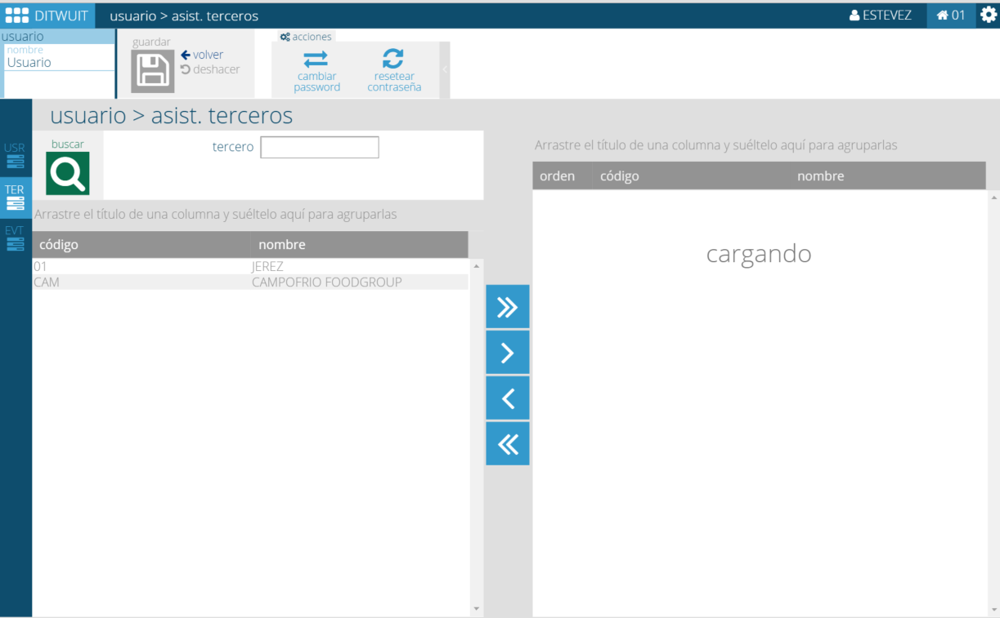

Terceros. Introducción¶
{kind=link}
Todo almacén cumple su función dentro de la Cadena de Suministro interactuando con otras entidades de la misma: Clientes, Proveedores, otros almacenes, copackers, transportistas, Operadores Logísticos, Fábricas, Propietarios,...
Cuando dichas entidades son ubicaciones físicas es posible asignarles un GLN (Global Location Number) que identifica de modo unívoco a dicha entidad según los estándares GS1. El uso del GLN facilita la comunicación con clientes y proveedores.
Clientes¶
Es el receptor de la mercancía del almacén. No tiene por qué existir un intercambio económico en la operación (ej.: las tiendas de una cadena de supermercados son clientes del almacén de dicha cadena de supermercados). Un cliente puede tener numerosos puntos de entrega de mercancía. Todo punto de entrega lleva asociado su propio GLN.
En todo cliente podemos identificar personas con las que el almacén debe interactuar (contactos).
Proveedores¶
Es la entidad encargada de suministrar la mercancía al almacén. Un proveedor puede tener numerosos puntos de envío de mercancía (ej.: Fábricas) y, por tanto, todo punto de envío lleva asociado el correspondiente GLN.
En todo proveedor podemos identificar personas con las que el almacén debe interactuar (contactos).
Transportistas¶
Entidad física responsable de desplazar la mercancía hacia o desde el almacén. Un transportista puede disponer de numerosas unidades, cada una identificada de modo independiente, para el traslado de mercancía. Estas unidades tienen características propias (dimensiones, peso máximo, puertas,…).
En todo transportista podemos identificar personas con las que el almacén debe interactuar (contactos).
Todo transportista puede requerir un etiquetado especial de la mercancía para su posterior distribución.
Copackers¶
Es una empresa encargada de manipular mercancía del almacén alterando las características físicas de la misma (etiquetado, creación de lotes,…). Un copacker actua como cliente cuando recibe la mercancía a manipular y como proveedor cuando envía la mercancía manipulada al almacén con la diferencia que existe una relación directa entre la mercancía enviada al copacker y la recibida.
Un copacker puede disponer de distintos puntos de entrega de mercancía, cada uno de los cuales debe disponer de su correspondiente GLN.
En todo copacker podemos identificar personas con las que el almacén debe interactuar (contactos).
Almacenes¶
Un almacén es otra ubicación de la mercancía con la que interactuamos (enviamos o recibimos mercancía). Todo almacén se identifica por el correspondiente código GLN.
El movimiento de mercancía hacia o desde almacenes se puede realizar a través de documentos de entradas y salidas generados manualmente o automáticamente en función de las necesidades.
Operadores Logísticos¶
Un operador logístico es aquella empresa que por encargo de su cliente diseña los procesos de una o varias fases de su cadena de suministro.
Por tanto, un operador logístico mueve y/o almacena la mercancía de un cliente o un proveedor.
Fábricas¶
La fábrica es aquella entidad donde se produce un bien a partir del procesado de materias primas. Una fábrica puede actuar como proveedor cuando envía la mercancía fabricada al almacén o como cliente cuando recibe la materia prima de un almacén.
Propietario¶
El propietario es el dueño de la mercancía existente en el almacén. Esta entidad adquiere sentido cuando el gestor del almacén es un operador logístico o cuando el almacén desea que esa mercancía no sea utilizada por otros clientes.